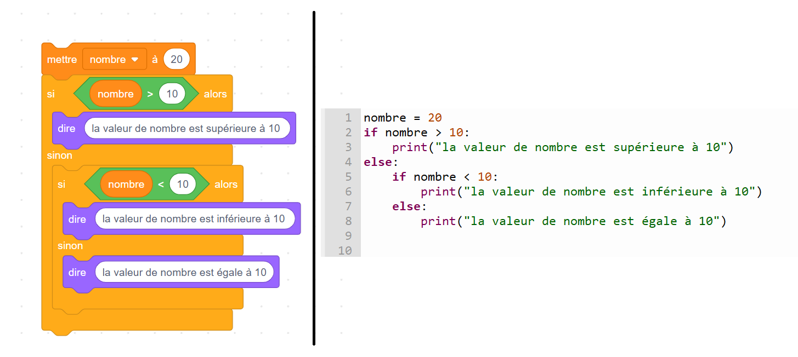
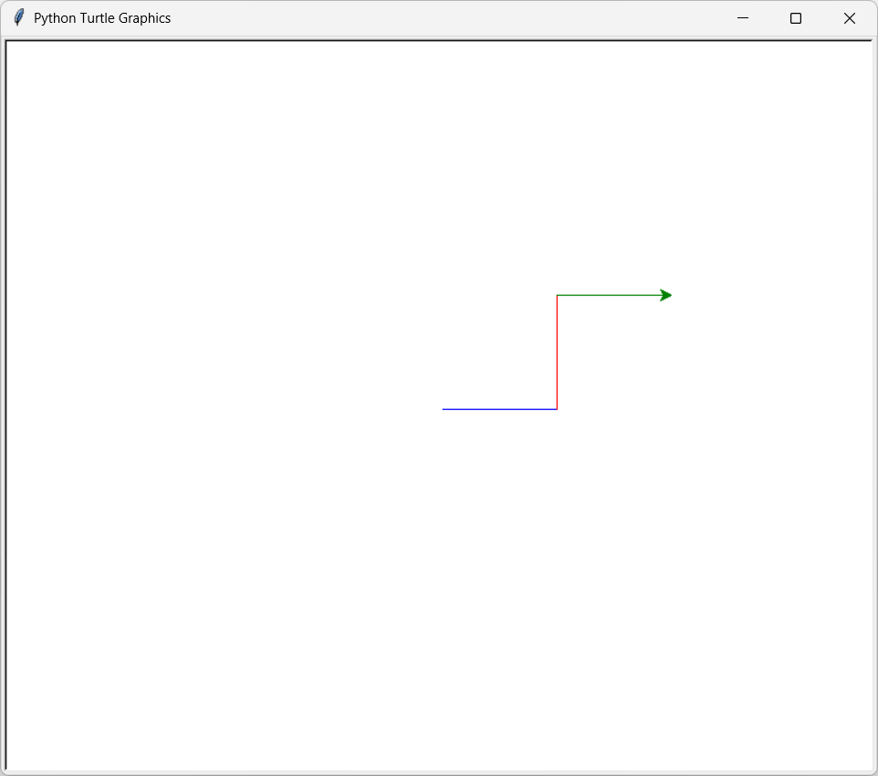
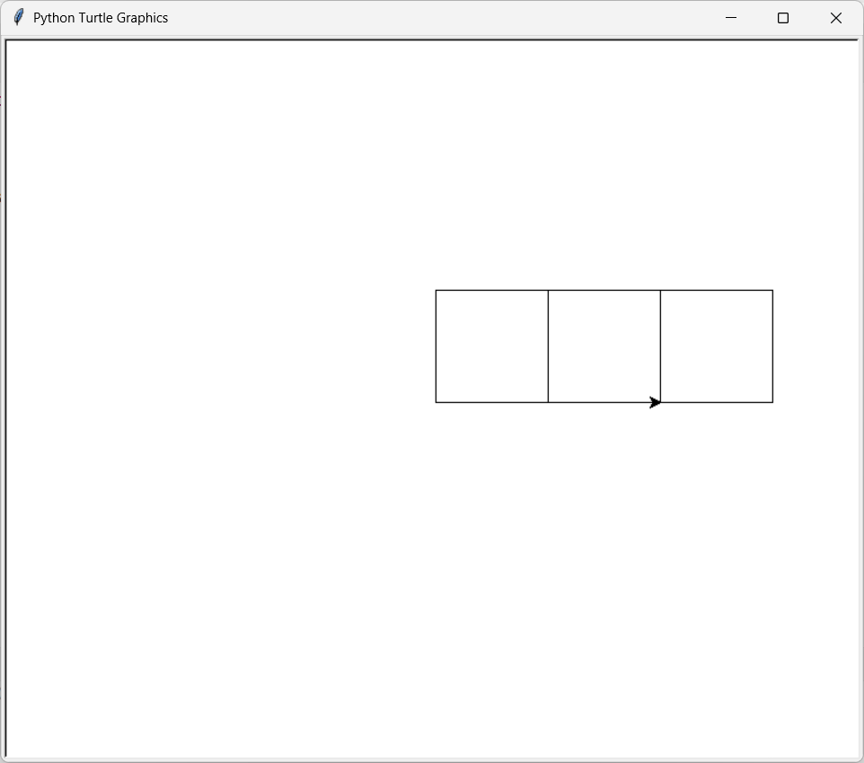
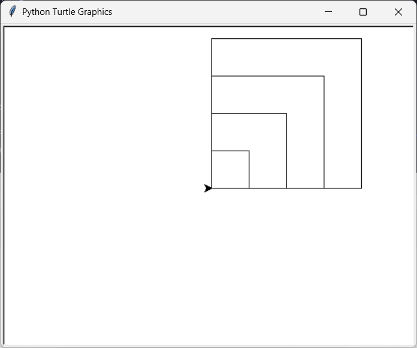
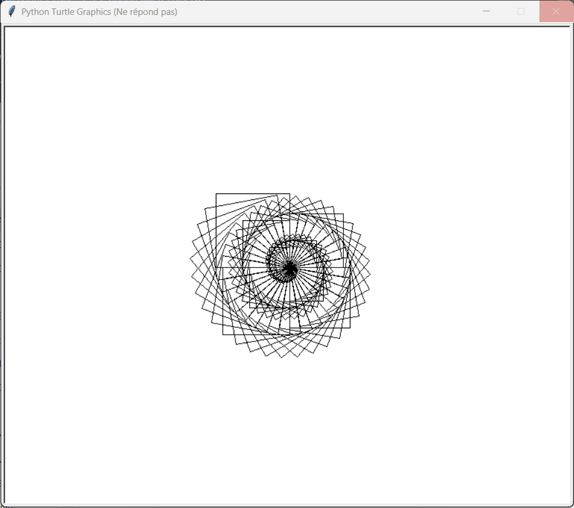
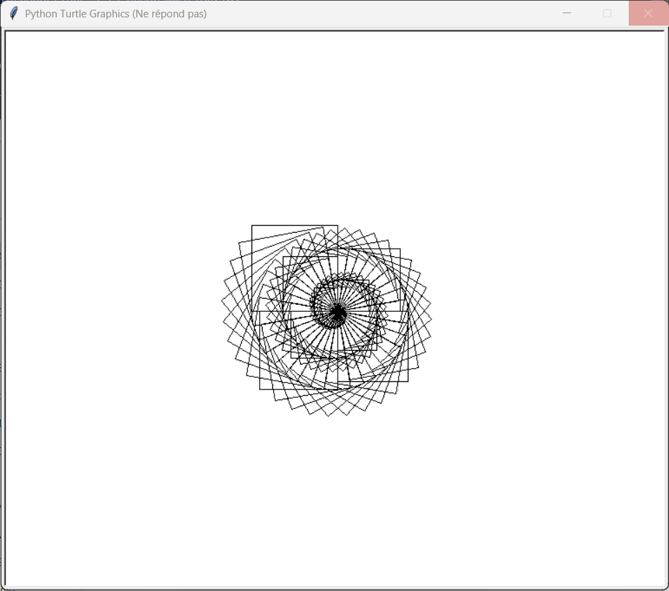

Introductions à la programmation
Introduction
Lors de vos années au collège, vous avez programmé en utilisant la programmation par blocs. Bien que ce type de langage ait des avantages pour comprendre les bases de la programmation, il reste limité.
C’est pour cela qu’au lycée, nous allons utiliser la programmation en Python. Ce langage n’est pas exclusif à la SNT, mais est également utilisé en mathématiques, en physique-chimie et en NSI.
Python, c’est bien 👍
Il est possible de réaliser l’ensemble des choses effectuées avec Scratch dans Python (comme dans l’exemple ci-dessous), et bien plus encore !

La programmation en 2 mots
rappel: La programmation, c’est dire à un ordinateur quoi faire en utilisant un langage qu’il peut comprendre. Un programme est donc une suite d’instructions que la machine exécute pas à pas.
👉 Exemple très simple en Python :
print("Bonjour !")
Ici, l’ordinateur affichera le texte Bonjour ! à l’écran.
La programmation permet de :
- Automatiser des tâches (répéter rapidement ce qui serait long à faire à la main).
- Créer des dessins, des jeux, des applications, etc.
- Résoudre des problèmes en traduisant une idée en suite d’instructions.
⚡ Retenez :
- L’ordinateur ne réfléchit pas tout seul → il fait exactement ce qu’on lui dit.
- La programmation, c’est comme apprendre une nouvelle langue pour dialoguer avec lui.
commentaire
⚠️ Dans la suite de cette introduction, vous verrez dans les codes proposés le symbole # disséminé un peu partout.
Ce symbole indique un commentaire, c’est-à-dire une indication destinée au lecteur du programme.
Un commentaire sert uniquement à expliquer le code : il n’a aucune influence sur l’exécution du programme.
Turtle
Il est possible, dans Python, d’importer ce que l’on appelle des modules. Ces modules sont des programmes créés par d’autres utilisateurs, permettant d’avoir accès à de nouvelles possibilités.
Aujourd’hui, nous allons utiliser le module Turtle, qui va nous permettre de dessiner en utilisant Python.
Histoire de Turtle
Le module Turtle est inspiré d’un langage de programmation à but éducatif nommé Logo, créé en 1967.
Ce langage permettait de dessiner à l’aide d’une tortue sur une feuille numérique.
Tombé en désuétude aujourd’hui, Logo a néanmoins été repris bien des années plus tard dans Python afin de pouvoir, comme à l’époque, introduire la programmation aux débutants.
Mise en place
Afin de pouvoir utiliser Turtle et programmer, il nous faut une application permettant d’écrire notre programme. Durant cette année, nous allons utiliser l’application Thonny, présente sur votre bureau.
thonny
Thonny est un logiciel pour programmer en Python, très utilisé en SNT car il est simple :
-
on écrit le code dans l’éditeur,
-
on lance avec ▶ et le résultat apparaît dans la console,
-
On peut suivre pas à pas l’exécution et voir les variables changer à l’aide du débogueur (nous verrons plus tard cet outil).
-
On peut sauvegarder et charger des codes faits précédemment.
Commençons tout d’abord par importer notre module turtle avec la commande :
from turtle import *
Cette commande signifie que l’on veut importer tout (symbolisé par *) depuis le module turtle.
Nous allons ensuite afficher la feuille sur laquelle nous ferons se déplacer notre tortue avec le code suivant :
from turtle import *
reset()
Nous sommes maintenant prêts à dessiner pour la suite de cette activité.
Possibilités
Avancer :
forward(100)
# avec 100 correspondant à la longueur du trait
Tourner à gauche :
left(90)
# avec 90 correspondant à l’angle que va prendre la tortue
Tourner à droite :
right(90)
# avec 90 correspondant à l’angle que va prendre la tortue
Changer la couleur :
color("blue")
# avec "blue" correspondant à la couleur (en anglais) utilisée par la tortue pour dessiner la suite
activité 1
Réalisez l’image suivante, où l’ensemble des traits est de longueur 100 à l'aide de Turtle.

Variables
Afin d’éviter de répéter plusieurs fois le même nombre dans notre code, on utilise ce que l’on appelle des variables. Ces variables permettent de stocker une donnée (une information).
Exemple :
x = 100
Ces variables ont également la possibilité d’être modifiées.
Exemple :
x = 100
x = x - 1
Enfin, il est possible d’utiliser les variables dans les fonctions (nous reviendrons sur ce terme plus tard) vues précédemment.
Exemple :
x = 100
forward(x)
activité 2
Réalisez l’image suivante, où le premier trait est égal à 10 et double à chaque nouveau trait à l'aide de Turtle.

Indice : la multiplication entre deux nombres s’effectue avec l’opérateur *
activité 3
Tu viens de souscrire à un abonnement téléphonique pour ton téléphone portable. Chaque mois, l’opérateur te facture :
- Frais fixes mensuels : 10 €
- Prix par minute d’appel : 0,05 €
- Prix par SMS : 0,02 €
Tu souhaites savoir combien va te coûter ton forfait en fonction de ton utilisation. Pour cela, tu décides de faire un petit programme Python.
-
Définis des variables pour représenter :
- le nombre de minutes (
minutes) égales à 0 - le nombre de SMS (
sms) égales à 0
- le nombre de minutes (
-
Écris une formule (ou un petit programme Python) qui calcule le coût total du mois en fonction de ces variables.
-
Calcule le coût pour :
- 120 minutes et 50 SMS
- 300 minutes et 10 SMS
activité 4
On considère le programme suivant :
distance = 150 # en kilomètres
temps = 3 # en heures
vitesse = distance / temps
print("La vitesse moyenne est de", vitesse, "km/h")
Questions
- Quelle est la valeur de la variable
distance? - Quelle est la valeur de la variable
temps? - Quelle opération est effectuée pour calculer la variable
vitesse? - Quelle est la valeur finale de
vitesse? - Quel sera le message affiché par le programme ?
Conditions
En Python (et en informatique en général), il est possible de faire des choix entre plusieurs possibilités. Pour cela, on utilise ce qu’on appelle des conditions.
Mais avant d’aller plus loin, il faut comprendre une notion très importante : les booléens.
Un booléen est une valeur logique qui ne peut être que :
-
True (vrai)
-
False (faux)
C’est une réponse à une question fermée
exemple :
Est-ce que 5 est plus grand que 3 ? → True
Est-ce que 10 est plus petit que 2 ? → False
En Python, on peut tester cela directement avec les operateurs utilisé en mathématique.
exemple :
print(5 > 3) # Affiche True
print(10 < 2) # Affiche False
print(100 == 100) # Affiche True
Ici, les symboles comme >, < ou == sont appelés opérateurs de comparaison.
Ils permettent de comparer deux valeurs et de renvoyer un booléen (True ou False).
activité 5 :
Pour chaque proposition suivante, dis si elle est vraie ou fausse :
-
100 > 99 -
100 < 99 -
100 > 100 -
100 == 99
Une condition en Python s’écrit avec un mot-clé suivi d’un booléen (ou d’une expression qui produit un booléen).
La syntaxe est la suivante :
if condition_1:
# faire cette partie
elif condition_2:
# faire cette partie
else:
# faire cette partie
Trois termes sont utilisés ici :
-
if : signifie si en français. → Si la condition qui suit est vraie, alors la partie en dessous est exécutée.
-
elif : signifie sinon si en français. → Si la condition précédente est fausse et que la condition qui suit est vraie, alors la partie en dessous est exécutée.
-
else : signifie sinon en français. → Si toutes les conditions précédentes sont fausses, alors la partie en dessous est exécutée.
Exemple :
x = 100
if x < 20:
print("x est inférieur à 20")
elif x > 20:
print("x est supérieur à 20")
else:
print("x est égal à 20")
Essayez ce programme en modifiant la valeur de x pour comprendre comment fonctionnent les conditions.
activité 6
Écris un programme en Python qui :
- Demande à l’utilisateur de saisir son âge (utilise
input()). - Si l’âge est supérieur ou égal à 18, affiche :
Tu es majeur.
Tu es mineur.
Exemple d’exécution
Entre ton âge : 16
Tu es mineur.
Entre ton âge : 20
Tu es majeur.
Aide
- Utilise la fonction
input()de ma maniere suivante: input("Entre ton âge : ") pour pouvoir interroger l'utilisateur. - Utilise une condition
ifetelse.
activité 7
On considère le programme suivant :
note = 14
if note >= 16:
print("Mention Très Bien")
elif note >= 14:
print("Mention Bien")
elif note >= 12:
print("Mention Assez Bien")
elif note >= 10:
print("Mention Passable")
else:
print("Échec")
Questions
- Quelle est la valeur de la variable
noteau début du programme ? - Quelle est la première condition testée par le programme ? Est-elle vraie ou fausse ici ?
- Quelle condition sera vraie dans ce cas précis ?
- Quel sera le message affiché par le programme ?
- Que se passerait-il si
note = 9?
Activité 8
Écris un programme en Python en utilisant Turtle qui :
- Déclare une variable
xégale à 100. - Dessine un trait de longueur
xpuis tourne à gauche. - Ajoute 10 à
x. - Si
xest supérieur à 110, change la couleur de la tortue en rouge ("red"). - Recommence à partir de l’étape 2 pour le faire 10 fois (en utilisant du copier-coller).
Boucles
Supposons que l’on veuille effectuer plusieurs fois la même action : il est possible d’utiliser une boucle. Celle-ci nous permet de ne pas écrire plusieurs fois la même chose.
Par exemple, le code suivant :
reset()
x = 100
forward(x)
left(90)
forward(x)
right(90)
forward(x)
left(90)
forward(x)
right(90)
forward(x)
left(90)
forward(x)
right(90)
peut être remplacé par :
reset()
x = 100
for i in range(3):
forward(x)
left(90)
forward(x)
right(90)
activité 9
Réalisez l’image suivante en utilisant une boucle for à l'aide de Turtle.

activité 10
On considère le programme suivant :
for i in range(4):
print("SNT est génial !")
Questions
- Combien de fois la boucle s’exécute-t-elle ?
- Quelle est la phrase affichée par le programme ?
- Recopie exactement ce que le programme affichera à l’écran (ligne par ligne).
Regardons maintenant de plus près la ligne suivante :
for i in range(3):
-
range(n)crée un ensemble d’éléments partant de 0 jusqu’àn-1. → Dans l’exemple précédent,range(3)crée les éléments 0, 1, 2. -
La boucle se lance, et la variable
i(appelée indice) va prendre successivement les valeurs créées parrange(n).
Dans l’exemple précédent, cela donne :
| Position dans le code | Valeur de i |
|---|---|
| Avant d’entrer dans la boucle | |
| 1ʳᵉ itération (tour) | 0 |
| 2ᵉ itération (tour) | 1 |
| 3ᵉ itération (tour) | 2 |
| Une fois sorti de la boucle |
Il est possible d’utiliser i comme une variable au sein de la boucle, comme dans l’exemple suivant :
resultat = 0
for i in range(10):
resultat = resultat + i
Ici, resultat va être égal à la somme des éléments de 0 à 9 (10 étant exclu), soit :
activité 11
Réalisez l’image suivante en utilisant une boucle for et en exploitant la variable i à l'aide de Turtle.

activité 12
Écris un programme en Python qui :
- Affiche les nombres de 1 à 5.
- Pour chaque nombre, affiche aussi son carré (le nombre multiplié par lui-même).
Le résultat attendu doit être de la forme :
Le carré de 1 est 1
Le carré de 2 est 4
Le carré de 3 est 9
Le carré de 4 est 16
Le carré de 5 est 25
Aide
- Utilise une boucle
foravecrange(1, 6). - Utilise une variable (par exemple
carre) pour stocker le résultat du calcul. - Utilise
print()pour afficher le texte au format suivantprint("le carré de",?,"est",?)en remplacant les ?
Fonctions
Pour conclure cette partie, Python permet la création et l’utilisation de fonctions, qui sont des blocs de code réutilisables plusieurs fois par la suite.
Si, par exemple, je voulais écrire quelque chose comme :
forward(10)
left(90)
forward(10)
right(90)
color('blue')
forward(10)
left(90)
forward(10)
right(90)
color('red')
forward(10)
left(90)
forward(10)
right(90)
On pourrait créer une fonction de la forme suivante :
def fonction_1():
forward(10)
left(90)
forward(10)
right(90)
Cette fonction porte le nom de fonction_1, et nous pouvons ensuite l’utiliser dans notre code :
def fonction_1():
forward(10)
left(90)
forward(10)
right(90)
fonction_1()
color('blue')
fonction_1()
color('red')
fonction_1()
activité 13
Créez une fonction carre qui dessine un carré dont les côtés sont de longueur 100, puis utilisez-la afin de refaire l’image suivante à l'aide de Turtle:

activité 14
On considère le programme suivant :
def message_bienvenue():
print("Bienvenue en SNT !")
print("Amuse-toi bien avec le code !")
message_bienvenue()
message_bienvenue()
Questions
- Quel est le nom de la fonction définie dans ce programme ?
- Cette fonction prend-elle des paramètres ?
- Que fait cette fonction lorsqu’elle est appelée ?
- Combien de fois la fonction est-elle exécutée ici ?
- Que sera affiché exactement à l’écran après l’exécution complète du programme ?
Il est également possible d’utiliser une autre fonctionnalité des fonctions : les paramètres.
Reprenons la fonction faite précédemment :
def fonction_1():
forward(10)
left(90)
forward(10)
right(90)
On veut maintenant préciser la longueur des traits lorsque l’on utilise la fonction.
Pour cela, on va créer un paramètre longueur dans notre fonction :
def fonction_2(longueur):
forward(longueur)
left(90)
forward(longueur)
right(90)
Nous pouvons maintenant l’utiliser en appelant la fonction avec une valeur :
def fonction_2(longueur):
forward(longueur)
left(90)
forward(longueur)
right(90)
fonction_2(50)
color('blue')
fonction_2(100)
color('red')
fonction_2(200)
Enfin, il est possible d’utiliser plusieurs paramètres en même temps :
def fonction_3(longueur, angle):
forward(longueur)
left(angle)
forward(longueur)
right(angle)
fonction_3(100, 90)
activité 15
Reprenez votre fonction carre créée précédemment en y ajoutant un paramètre pour la longueur des côtés.
Écrivez ensuite un code permettant de refaire l’image suivante à l'aide de Turtle :

activité 16
-
Écris une fonction appelée
carrequi :- prend un nombre en entrée,
- renvoie le carré de ce nombre.
-
Ensuite, utilise cette fonction pour :
- calculer le carré de 5,
- afficher le résultat avec
print().
Exemple d’exécution attendue
Le carré de 5 est 25
Aide
- Une fonction se définit avec
def nom_de_fonction(parametre): - Pour renvoyer une valeur, utilise
return. - Exemple de structure :
def carre(nombre):
# calcul du carré
return ...
pour allée plus loin
activité complementaire
reproduisez les dessins suivants:
 
